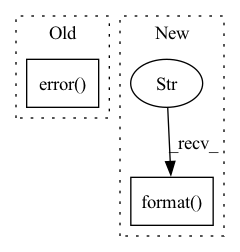

Pattern ID :1664

Before Change
def plot_daily(m, comp_name, quick=True, ax=None, figsize=(10, 6)):
log.error("Daily seasonality plotting not implemented")
After Change
ax.set_xticks(12 * np.arange(25))
ax.set_xticklabels(np.arange(25))
ax.set_xlabel("Hour of day")
ax.set_ylabel("Seasonality: {}".format(comp_name))
return artists
In pattern: SUPERPATTERN
Frequency: 3
Non-data size: 2
Instances
Fragment ID: 7765311
Project Name: ourownstory/neural_prophet
Commit Name: ab359fe6c9cd7f56a23c4807f8ecbf46e45fc724
Time: 2020-11-01
Author: ourownstory@users.noreply.github.com
File Name: neuralprophet/plot_model_parameters.py
M Class Name: AnonimousClass
N Class Name: AnonimousClass
M Method Name: plot_daily(5)
N Method Name: plot_daily(5)
M Parent Class:
N Parent Class:
M File Name: neuralprophet/plot_model_parameters.py
N File Name: neuralprophet/plot_model_parameters.py
M Start Line: 462
M End Line: 462
N Start Line: 489
N End Line: 506
'>
Before Change
return prediction
except Exception as e:
monitor.add_metric(workspace_id, "Error", 1.0)
logging.error("Unable to get prediction: {0}".format(str(e)))
return {"error": str(e)}
@app.get("/health")
After Change
monitor.log("[INFO] Successfully generated prediction.")
monitor.add_metric("Success", 1.0)
except Exception as e:
monitor.log("[Error] Unable to generate prediction: {0}".format(str(e)))
monitor.add_metric("Error", 1.0)
finally:
monitor.add_metric("Latency", round(time.time() * 1000) - start_time)
'>
Fragment ID: 7765308
Project Name: nantu-io/ntcore
Commit Name: afe4821f3ccd7342a20ec6cfcf66d810513c090c
Time: 2022-06-01
Author: dsp.columbus.2018@gmail.com
File Name: docker-images/fast-torch/app/main.py
M Class Name: AnonimousClass
N Class Name: AnonimousClass
M Method Name: predict(1)
N Method Name: predict(1)
M Parent Class:
N Parent Class:
M File Name: docker-images/fast-torch/app/main.py
N File Name: docker-images/fast-torch/app/main.py
M Start Line: 48
M End Line: 59
N Start Line: 47
N End Line: 58
'>
Before Change
str(self._node_repr.op_info.init_args),
str(self._node_repr.op_info.init_kws),
str(e))
engine_log.error(err)
return False
elif op_type in ["lambda", "callable"]:
self._op = self._node_repr.op_info.operator
return True
After Change
self._node_repr.op_info.tag)
return True
except Exception as e: // pylint: disable=broad-except
st_err = "{}, {}".format(str(e), traceback.format_exc())
err = "Create {} operator {}:{} with args {} and kws {} failed, err: {}".format(
self.name,
hub_id,
self._node_repr.op_info.tag,
'>
Fragment ID: 7765309
Project Name: towhee-io/towhee
Commit Name: b55da2dbfe53ce90372b0e27dd53b894ee6251ed
Time: 2022-10-28
Author: junjie.jiang@zilliz.com
File Name: towhee/runtime/nodes/node.py
M Class Name: Node
N Class Name: Node
M Method Name: initialize(1)
N Method Name: initialize(1)
M Parent Class: ABC
N Parent Class: ABC
M File Name: towhee/runtime/nodes/node.py
N File Name: towhee/runtime/nodes/node.py
M Start Line: 74
M End Line: 95
N Start Line: 74
N End Line: 101